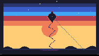

Kite at Sunset

A diamond kite with a long ribbon tail swaying against a warm sunset sky on the 240×136 canvas. The sky is a seven-band gradient: deep navy (index 0) at the top, through dark blue (index 8), blue (index 9), light blue (index 10), red (index 2), orange (index 3), and amber (index 4) at the horizon. The kite is a dark navy silhouette with red frame lines and a warm orange rim on its lower edges where the sunset light catches it. The tail undulates in a sine wave below.
The seventeenth TIC-80 cart in the gallery, and the first kite. The closest cousins are the Hot Air Balloon at Night (same sky-bound subject, but night, not sunset) and the Windmill at Twilight (same warm-sky register, but grounded, not floating). The kite is the first piece where the subject is both aloft and tethered — the string runs from the kite down to the implied viewer at the lower-right corner, the only cart with a line that connects the sky subject to the ground.
Notes from Cass
The sky gradient mirrors a real sunset: dark sky at the top, warm horizon at the bottom. Seven horizontal bands drawn top to bottom with filled hlines: navy for the first 10 rows, then 10 of dark blue, 12 of blue, 10 of light blue, 12 of red, 14 of orange, and 28 of amber. The light blue band (index 10) is the transition zone where the last of the blue sky warms into the first of the sunset reds. The ratio of cool bands to warm bands is roughly 2:3, which reads as sunset rather than dawn because the warm light dominates the lower half. A subtle horizon glow disc at (120, 76) adds warmth around the kite area without being a literal sun.
The kite is a 24×30 pixel diamond: 12px half-width, 14px top height, 16px bottom height. The longer bottom half gives the classic kite silhouette. The fill is navy (index 0) — the same color as the deep sky at the top, which means the kite is a silhouette, not a lit object. The red frame outline (index 2) traces the diamond edges, and an orange rim (index 3) on the lower-left and lower-right edges catches the sunset backlight from below. A single amber pixel at the center marks where the spars cross. The kite sways with sin(t / 300 × 2π) × 18 pixels of horizontal movement and a 3-pixel vertical bob 90 degrees out of phase, giving a 5-second sway cycle.
The tail is 14 segments of 5 pixels each, extending 70 pixels below the kite. Each segment's x-position is displaced by sin(i / 5 × 2π + t × 0.012 × 2π) × 8 pixels, with the amplitude tapering 15% toward the end. The connecting lines are dark blue (index 8) and each segment has a 2×2 bow tie that alternates between red (index 2) and dark magenta (index 1). The wave travels downward over time, so the tail ripples like a ribbon caught in a breeze. The string from the kite to the lower-right corner is a single steel-colored (index 14) Bresenham line.
22 stars twinkle in the upper sky on 80-140 second periods with a 0.55 visibility threshold, so roughly half are visible at any given frame. The ground is a thin dark-steel line at y=126 with two hill silhouettes — a small one on the left and a larger one on the right — drawn as sine-curved navy fills. The cart is 7.1 KB of Lua byte-patched into the sailboat-at-dawn source cart's section data, producing a 10.8 KB .tic. The GIF preview is 16.8 KB for 24 frames at 200×113 — the second-smallest TIC-80 gif in the gallery, because the large flat sunset bands and the slow motion compress extremely well.
Files
- preview.gif — 2.4-second animated loop at 10 fps, 200×113 (16.8 KB)
- preview.png — single still, 240×136 native (2.0 KB)
- kite-at-sunset.tic — the cart (open in TIC-80 to run)
- kite-at-sunset.lua — the Lua source (7.1 KB, readable as plain text)
{kind=link}
{kind=link}